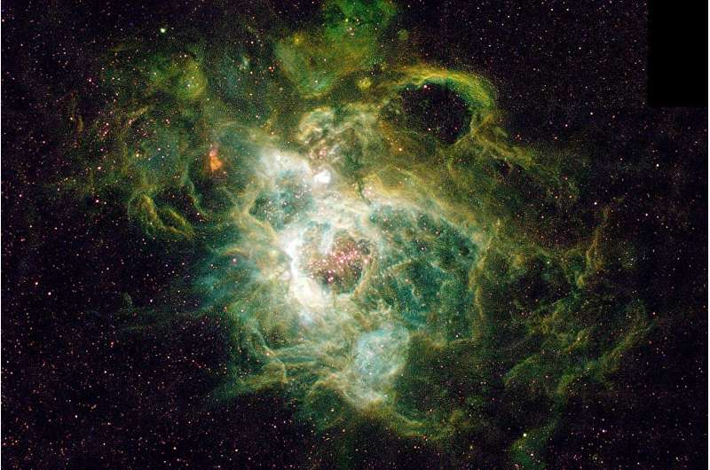

October 13, 2026 · 2 min read
The Universe's Birth Recipe, Re-measured

Hui Yang (University of Illinois) and NASA/ESA
The Universe's Birth Recipe, Re-measured
In the Big Bang's first moments, only two elements were forged in any meaningful quantity: hydrogen and helium, roughly three parts hydrogen to one part helium. The tiniest traces of lithium appeared too, but nothing of consequence. Everything heavier — the oxygen in your lungs, the iron in your blood — came later: fused in stars, formed in supernovae, or scattered when neutron stars collided.
That primordial ratio is one of the Big Bang model's key predictions. But measuring it has always had a catch: although all the hydrogen we observe was made in the Big Bang, not all the helium was. Stars produce helium as the most common byproduct of fusion, so over billions of years the universe's helium abundance has crept upward — stellar exhaust skewing the original recipe.
The Large Binocular Telescope Yp Project
The Large Binocular Telescope Primordial Helium Abundance (LBT Yp) Project set out to beat that contamination problem by measuring hydrogen and helium in metal-poor galaxies — 54 of them, looking at their interstellar gas regions. These are distant galaxies with mostly early stars and very few heavy elements, so their gas carries minimal stellar helium.
The result, published as a series of papers in The Astrophysical Journal (2026):
- Primordial helium = 24.58% of the universe's initial matter by mass.
- The Planck satellite's measurement of the cosmic microwave background gave 24.67% — two completely independent ways of weighing the birth of the cosmos, agreeing closely.
- About 90% of cosmic helium is primordial; the other 10% was made later by stars — a clue to star-formation rates and how elements get built.
Why it matters
Astronomers describe the Big Bang model as resting on three observational pillars. This result further strengthens one of them: Big Bang nucleosynthesis. It doesn't settle everything — nothing does — but it makes the model that little bit harder to argue with.
Papers: Evan D. Skillman et al., The Astrophysical Journal (2026), DOI 10.3847/1538-4357/ae879f · Erik Aver et al., DOI 10.3847/1538-4357/ae879b · Tsung-Han Yeh et al., DOI 10.3847/1538-4357/ae879c
Sources: Phys.org, Oct 12, 2026
Source: Phys.org — read the original report
← Back to latest stories